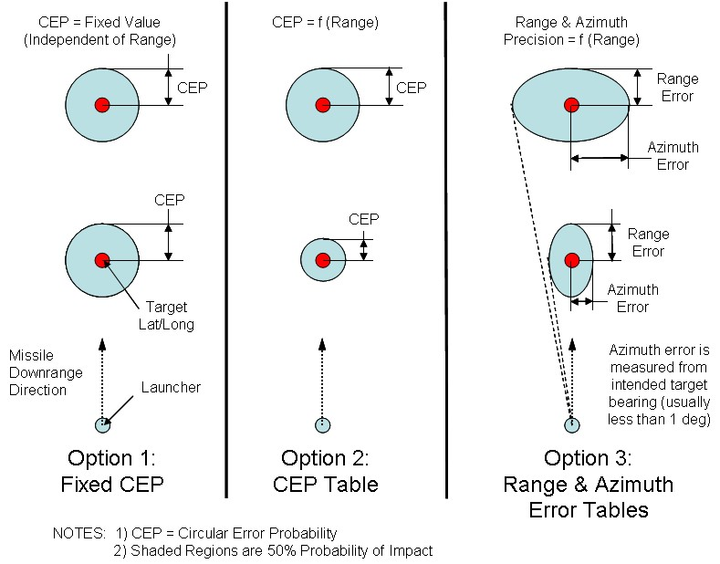

WSF_TBM_MOVER¶
- mover WSF_TBM_MOVER¶
mover <name> WSF_TBM_MOVER ... base mover commands ... trajectory_type [ lofted | depressed ] target_position <latitude-value> <longitude-value> ignore_target show_status stage <stage-number> ballistic_coefficient <force/area value> end_stage empty_mass <mass-value> fuel_mass <mass-value> fuel_mass_fraction <fraction> pre_ignition_coast_time <time-value> pre_separation_coast_time <time-value> specific_impulse <time-value> total_mass <mass-value> thrust <force-value> thrust_duration <time-value> cep <distance value> cep_table range <distance value> cep <distance value> range <distance value> range_error <distance value> azimuth_error <angle value> end_cep_table end_mover
Overview¶
WSF_TBM_MOVER implements a mover that is capable of representing a single or multistage tactical ballistic missile in a simplified format. With the WSF_TBM_MOVER, trajectories tend to have extreme altitudes because fuel is completely burned.
Note
If a higher definition of a ballistic missile is required (such as in the case of ballistic missile intercepts), the use of the WSF_GUIDED_MOVER is highly recommended.
The TBM mover has the following characteristics:
The standard ‘rocket equation’ is integrated using a 4-stage Runge-Kutta method.
Thrust is assumed to be constant over the burn time.
Fuel consumption is assumed to be constant over the burn time.
Atmospheric drag is modeled with an exponential model for altitudes less than 200,000 meters. No drag is assumed for higher altitudes.
There is no provision for forces other than thrust and gravity. Thus, the trajectory is completely defined by the initial conditions and the stage definitions.
When calculating trajectory, the mover computes a desired ground range that it associates with its target. It then produces a launch angle with a calculated ground range that is within 10 meters of the target. In rare cases, the internal algorithm may lack the precision necessary to satisfy this condition, so the trajectory instead represents a “best attempt.”
The missile immediately pitches to the required trajectory.
A TBM mover is typically part of a platform type that is launched by an instance of WSF_EXPLICIT_WEAPON. The platform type also typically includes a WSF_WEAPON_FUSE to indicate when to terminate. The mover will establish the initial state of the platform to which it is attached by one of two methods:
You may specify a target position using either the target_position command or from the ‘current target track’ as defined by weapon launching process in WSF_EXPLICIT_WEAPON. The mover will determine an initial state that will result in the impacting of the target position, unless a fixed Circular Error Probability (CEP) or CEP table is supplied. If CEP options are used, the specified target position will be offset to a new terminal impact location to introduce a miss distance.
You may set the orientation (yaw and pitch) of the WSF_EXPLICIT_WEAPON. The mover will not do any precomputation of the trajectory. If you are dealing with fixed launch and target locations then you may run a case once with show_status enabled and then use the output to set the yaw and pitch values and use ignore_target to prevent recalculation of the initial conditions.
Commands¶
- trajectory_type [ lofted | depressed ]¶
Specify the type of trajectory to be used to reach the target. This is not used if a target was not specified.
Default: lofted
- target_position <latitude-value> <longitude-value>¶
Specify the position of the target. Not used if ignore_target is used. May miss the target if cep or cep_table is used.
Default: If not specified then the target location is defined by the ‘current target track’ as handed off by the weapon launching process.
- ignore_target¶
Indicate that any target position (defined either by target_position or the ‘current target track’) is to be ignored. The orientation of the platform to which the mover is attached defines the initial state.
- show_status¶
Display status information at launch time.
- stage <stage-number> … end_stage¶
Define the attributes of the only state of a single stage vehicle or one of the stages in a multistage vehicle. <stage number> must be a value that is greater than or equal to 1 and less than or equal to the current number of defined stages plus one. If the value specifies a stage that already exists then the enclosed subcommands override the values in that stage. If the value is equal to the current number of defined stages plus one then a new stage is created and populated with the enclosed subcommands. It is invalid to specify a stage number that is more than one higher than the current highest defined stage number.:
stage <stage-number> ... stage subcommands ... end_stage
- ballistic_coefficient <force/area value>¶
The ballistic coefficient. This is a required value and there is no default.
- empty_mass <mass-value>¶
Specify the mass of the stage without fuel.
Default: If not provided, this value will be computed from total_mass and either fuel_mass or fuel_mass_fraction.
- fuel_mass <mass-value>¶
Specify the mass of the fuel on the stage. This, or fuel_mass_fraction, must be specified if a non-zero thrust_duration is specified.
- fuel_mass_fraction <fraction>¶
Specify the fraction (0.0 to 1.0) of the total_mass of the stage that is fuel. This, or fuel_mass, must be specified if a non-zero thrust_duration is specified.
- pre_ignition_coast_time <time-value>¶
Specify the amount of time that will elapse between the start of the stage and when the engine will ignite.
Default: 0.0 sec
- pre_separation_coast_time <time-value>¶
Specify the amount of time that will elapse between the burnout of this stage and its separation from the vehicle. This command has no effect for single-stage vehicles or the last stage of a multistage vehicle.
Default: 0.0 sec
- specific_impulse <time-value>¶
An alternative mechanism for specifying the thrust of the engine. This, or thrust, must be specified if a non-zero thrust_duration is specified.
- total_mass <mass-value>¶
Specify the total mass of the stage.
Default: If not provided, this value will be computed from fuel_mass and empty_mass if they are provided. If either fuel_mass or empty_mass is not provided then this value must be provided.
- thrust <force-value>¶
Specify the thrust of the engine. This, or specific_impulse, must be specified if a non-zero thrust_duration is specified.
- thrust_duration <time-value>¶
Specify the amount of time the engine will burn.
- cep <distance value>¶
Specify the inaccuracy of the missile in guiding to its target. This is a 50th-percentile statistically expected radial horizontal deviation from the targeted aim point. If neither cep distance or cep_table is specified, the missile will hit the specified target_position above. It is mutually exclusive to use either cep or a cep_table.
- cep_table … end_cep_table¶
- 
cep_table ... cep_table subcommands ... end_cep_table
Define a table of 50th percentile statistical errors that quantify the inaccuracy of the missile in hitting its intended target. (This option is mutually exclusive of the fixed cep keyword.) The error may be specified in either of two ways: circular error probability (CEP) or range and azimuth errors. In either case, the values are dependent values within a table lookup with nominal ground range to target as the independent variable. Only one table is allowed per missile, and a derived object that defines one will override its parent definition. For both of the ways of specifying accuracy below, the quantified error is for a given nominal target range. At least two such ranges must be given to enable a linear interpolation. One input line per nominal range, and each subsequent range value must be greater than the previous.
- range <distance value> cep <distance value>¶
Expected radial horizontal impact error at a given nominal target range. (Mutually exclusive of the [range, range_error, azimuth_error] triples below.) At least two ranges must be specified.
- range <distance value> range_error <distance value> azimuth_error <angle value>¶
Expected range and bearing impact errors at a given nominal target range. (Mutually exclusive of the [range, cep] pairs above.) At least two ranges must be specified.
Script Interface¶
The following script methods may be defined on the platform (not in the mover block):
void on_stage_ignition(int aStage) void on_stage_burnout(int aStage) void on_stage_separation(int aStage)
These scripts are invoked during the ignition, burnout and separation of a stage, respectively. The value of ‘aStage’ will be the stage number, starting at 1.
One use of these methods is to alter the signature state so as to reflect a change in signature of the vehicle, or to use other script methods to change visual effects for the platform.